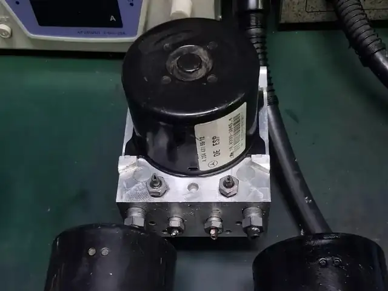

Featured (paid)ABS, ECU and module repair in Singapore
ABS and ECU module repair fixes the electronic units that control braking, gearbox shifts and engine functions. Many warning lights come from a failed pump or circuit board, not the whole car. A specialist tests the unit, repairs it on the bench where possible and refits it. Ask for the car model and fault codes.
Featured (paid) in abs and ecu
Paid placements, shown on their own. They are not part of any ranking or order on this page.
Listings
List your workshop
For business owners: is your workshop listed here? Claiming a listing is free.
What abs, ecu and module repair involves
ABS and ECU work fixes the electronic units that control braking, the engine and the gearbox. A specialist reads fault codes, tests the unit, and repairs the pump or circuit board on the bench where possible instead of replacing it.
Signs you may need it
- ABS, traction control or brake warning lights that stay on
- Engine running problems with module-related fault codes
- Gearbox shifting faults linked to a control unit
- Electrical faults that come and go
What to ask the workshop
- Which fault codes were found
- Whether the unit can be repaired or must be replaced
- Whether coding or programming is needed after refitting
- What warranty is given on the repaired unit
Related car problem guides
Questions about abs, ecu and module repair
Is it safe to drive with the ABS light on?
Normal braking usually still works, but the anti-lock function may be off. Get it checked soon, especially before driving in the rain.
Why repair a module instead of replacing it?
A failed solder joint or component can often be repaired on the bench. A specialist can tell you whether that applies to your unit.